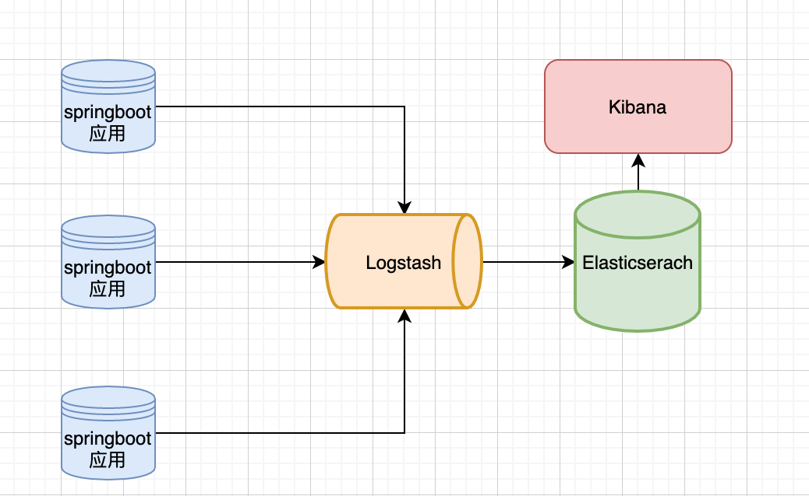
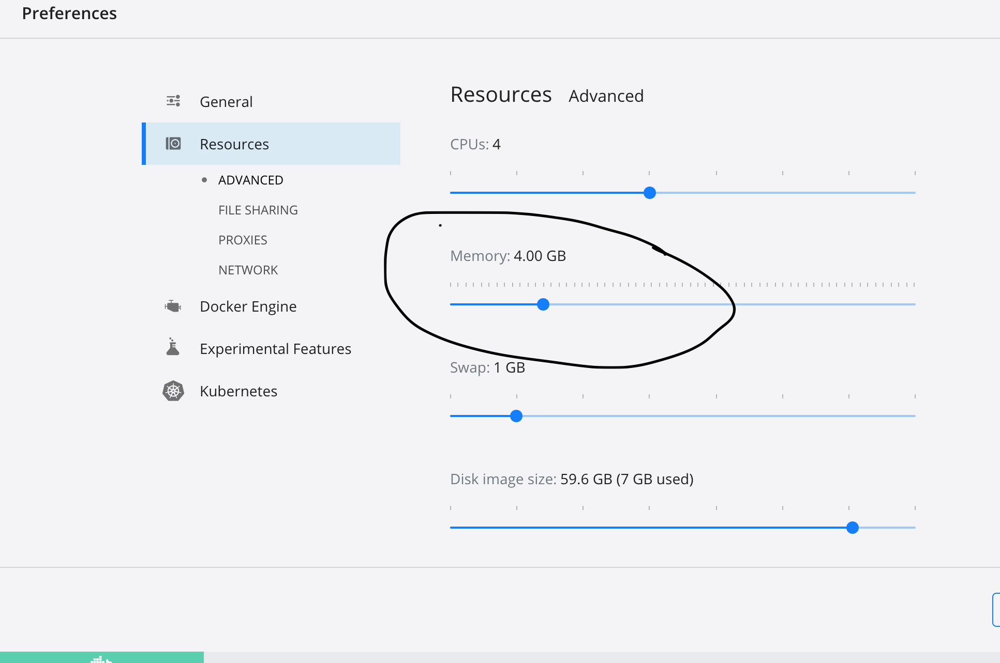
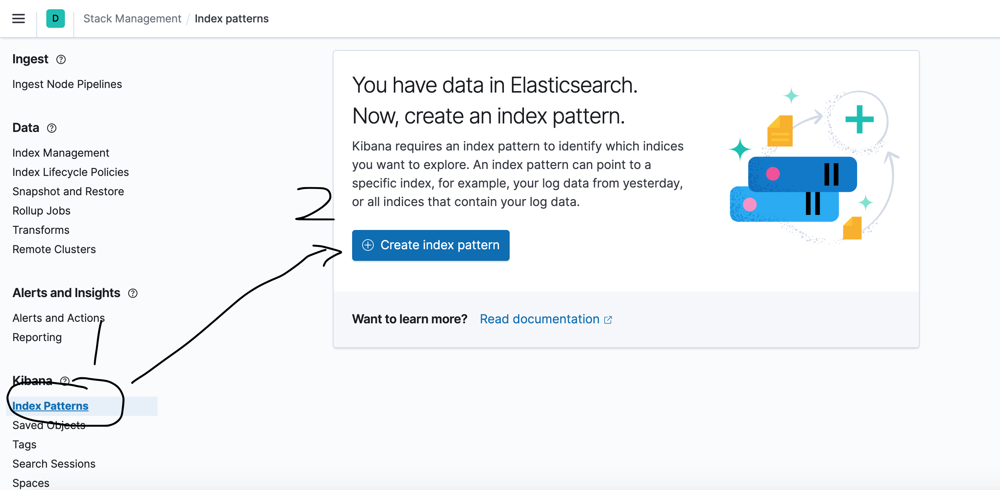
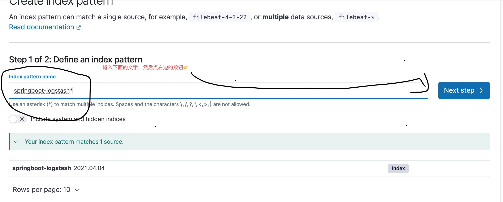
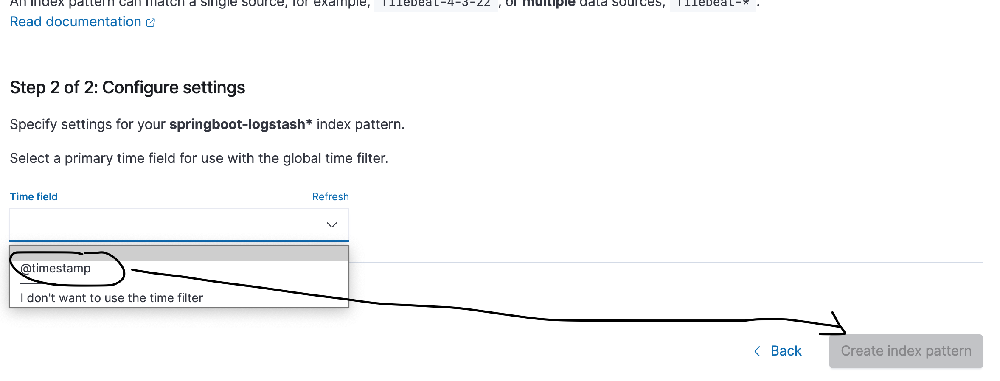
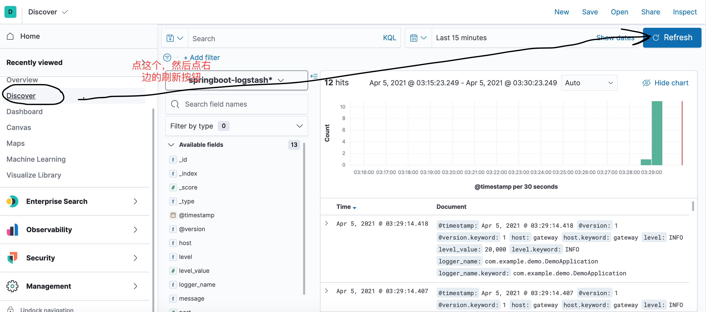

SpringBoot应用整合ELK实现日志收集
摘要
ELK即Elasticsearch（后面简称ES）、Logstash、Kibana这三个组件，这三个组件配合起来可以搭建线上的日志系统，本文主要讲述如何使用ELK来收集springboot项目的日志
ELK各个组件的作用
- Elasticsearch：用于存储收集的日志
- Logstash：用于收集日志，SpringBoot应用整合了Logstash以后会把日志发送给Logstash,Logstash再把日志转发给Elasticsearch
- Kibana：通过提供web端可视化界面来查看日志
具体流程可，大致如下图：

使用Docker Compose搭建ELK环境
下载Docker镜像
docker pull elasticsearch:7.12.0
docker pull logstash:7.12.0
docker pull kibana:7.12.0
注意⚠️：这里一定要指定镜像版本，不然下载的是两年前的版本
搭建Elasticsearch集群
这里，我是为了其他的用途搭建的是一个集群，你们也可以选这一个单机的ES，具体步骤如下：
创建一个docker-compose文件
vim /Users/mac/Environments/docker/es/es-compose.yml写入配置
version: '2.2' services: es01: image: elasticsearch:7.12.0 container_name: es01 environment: - node.name=es01 - cluster.name=es-docker-cluster - discovery.seed_hosts=es02,es03 - cluster.initial_master_nodes=es01,es02,es03 - bootstrap.memory_lock=true - "ES_JAVA_OPTS=-Xms512m -Xmx512m" ulimits: memlock: soft: -1 hard: -1 volumes: - data01:/usr/share/elasticsearch/data ports: - 9200:9200 networks: - elastic es02: image: elasticsearch:7.12.0 container_name: es02 environment: - node.name=es02 - cluster.name=es-docker-cluster - discovery.seed_hosts=es01,es03 - cluster.initial_master_nodes=es01,es02,es03 - bootstrap.memory_lock=true - "ES_JAVA_OPTS=-Xms512m -Xmx512m" ulimits: memlock: soft: -1 hard: -1 volumes: - data02:/usr/share/elasticsearch/data networks: - elastic es03: image: elasticsearch:7.12.0 container_name: es03 environment: - node.name=es03 - cluster.name=es-docker-cluster - discovery.seed_hosts=es01,es02 - cluster.initial_master_nodes=es01,es02,es03 - bootstrap.memory_lock=true - "ES_JAVA_OPTS=-Xms512m -Xmx512m" ulimits: memlock: soft: -1 hard: -1 volumes: - data03:/usr/share/elasticsearch/data networks: - elastic # kibana: # image: kibana:7.12.0 # container_name: kibana # ports: # - 5611:5601 # depends_on: # - es01 # - es02 # - es03 # environment: # SERVER_NAME: kibana # ELASTICSEARCH_HOSTS: http://es01:9200 # #ELASTICSEARCH_URL: http://es01:9200 # networks: # - elastic # logstash: # image: logstash:7.12.0 # container_name: logstash # volumes: # - ./logstash-springboot.conf:/usr/share/logstash/pipeline/logstash.conf #挂载logstash的配置文件 # depends_on: # - es01 #es节点启动之后在启动 # - es02 # - es03 # ports: # - 4560:4560 # networks: # - elastic volumes: data01: driver: local data02: driver: local data03: driver: local networks: elastic: driver: bridge执行
docker-compose -f es-compose.yml up -d,使用docker ps命令查看是否启动成功或者访问http://localhost:9200/_cat/health?v看是否有结果。如果docker是刚下载的话没有进行特殊配置的话，应该会出现，一开始出现3个节点，然后迅速挂掉几个现象。这是因为es集群占用内存太大，内存不够会杀掉应用，官网上推荐的是4g内存（内存不够跑单节点就行了），我们可以修改docker配置，给他更大内存，如图所示：
修改完成，执行
docker-compose -f es-compose.yml down -v关闭容器，重复步骤3
搭建Kibana
将上面es-compose.yml中kibana相关配置打开，重启。访问http://localhost:5611/,会出现kibana的ui界面
搭建Logstash
es-compose.yml同级目录下，创建一个文件，文件名称是logstash-springboot.conf,然后填入如下内容：
input {
tcp {
mode => "server"
host => "0.0.0.0"
port => 4560
codec => json_lines
}
}
output {
elasticsearch {
hosts => "es01:9200"
index => "springboot-logstash-%{+YYYY.MM.dd}"
}
}
然后类似上面的，打开es-compose.ymlLogstash配置，并重启。至此，ELK已经搭建完成
在SpringBoot应用中集成Logstash
创建一个springboot应用，在pom文件中引入依赖文件
<!-- https://mvnrepository.com/artifact/net.logstash.logback/logstash-logback-encoder --> <dependency> <groupId>net.logstash.logback</groupId> <artifactId>logstash-logback-encoder</artifactId> <version>6.6</version> </dependency>在resouce目录下添加一个文件，文件名称为logback-spring.xml，作用是将logback的日志输出到Logstash中去，文件内容如下
<?xml version="1.0" encoding="UTF-8"?> <!DOCTYPE configuration> <configuration> <include resource="org/springframework/boot/logging/logback/defaults.xml"/> <include resource="org/springframework/boot/logging/logback/console-appender.xml"/> <!--应用名称--> <property name="APP_NAME" value="mall-admin"/> <!--日志文件保存路径--> <property name="LOG_FILE_PATH" value="${LOG_FILE:-${LOG_PATH:-${LOG_TEMP:-${java.io.tmpdir:-/tmp}}}/logs}"/> <contextName>${APP_NAME}</contextName> <!--每天记录日志到文件appender--> <appender name="FILE" class="ch.qos.logback.core.rolling.RollingFileAppender"> <rollingPolicy class="ch.qos.logback.core.rolling.TimeBasedRollingPolicy"> <fileNamePattern>${LOG_FILE_PATH}/${APP_NAME}-%d{yyyy-MM-dd}.log</fileNamePattern> <maxHistory>30</maxHistory> </rollingPolicy> <encoder> <pattern>${FILE_LOG_PATTERN}</pattern> </encoder> </appender> <!--输出到logstash的appender--> <appender name="LOGSTASH" class="net.logstash.logback.appender.LogstashTcpSocketAppender"> <!--可以访问的logstash日志收集端口,填logstash的地址端口--> <destination>localhost:4560</destination> <encoder charset="UTF-8" class="net.logstash.logback.encoder.LogstashEncoder"/> </appender> <root level="INFO"> <appender-ref ref="CONSOLE"/> <appender-ref ref="FILE"/> <appender-ref ref="LOGSTASH"/> </root> </configuration>启动springboot应用，访问下有日志输出的接口，然后去Kibana中查看
在Kibana中查看日志
创建index pattern



查看收集日志

总结
搭建了ELK日志收集系统之后，我们如果要查看SpringBoot应用的日志信息，就不需要查看日志文件了，直接在Kibana中查看即可。